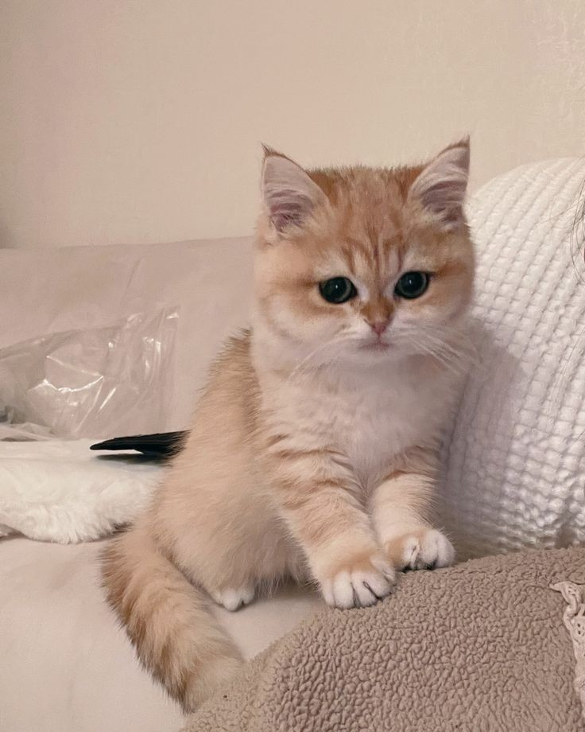
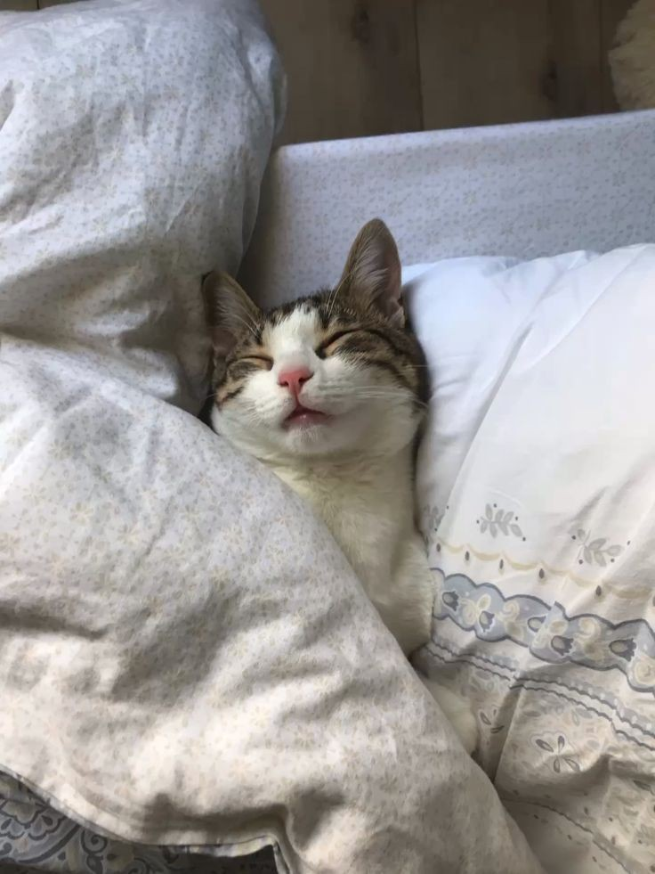
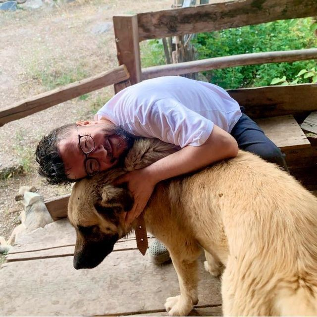

Adoption is a life-changing experience. By adopting a pet, you're not only giving an animal a second chance at life, but you're also opening your heart to unconditional love and companionship. Here at our platform, we strive to make the adoption process as seamless and joyful as possible.

"Adopting Bella was the best decision we've ever made. The process was simple, and we received constant support throughout. Bella has brought so much joy to our home, and we're so grateful for this platform that made it possible!"

"After losing my cat last year, I wasn't sure if I was ready to adopt again. But when I saw Charlie's profile, I knew he was the one. The process was easy to follow, and I felt supported every step of the way. Now, Charlie is my best friend, and we are inseparable."

"We never thought adopting a pet could be so rewarding. Our new dog, Max, has filled our home with love and excitement. The whole experience was smooth, and we loved how the platform kept us updated every step of the way. Thank you for bringing Max into our lives!"
If you're ready to open your heart to a new furry friend, browse our available pets and start the adoption process today. Every pet deserves a loving home, and you could be the one to make that happen!
Start Your Adoption Journey